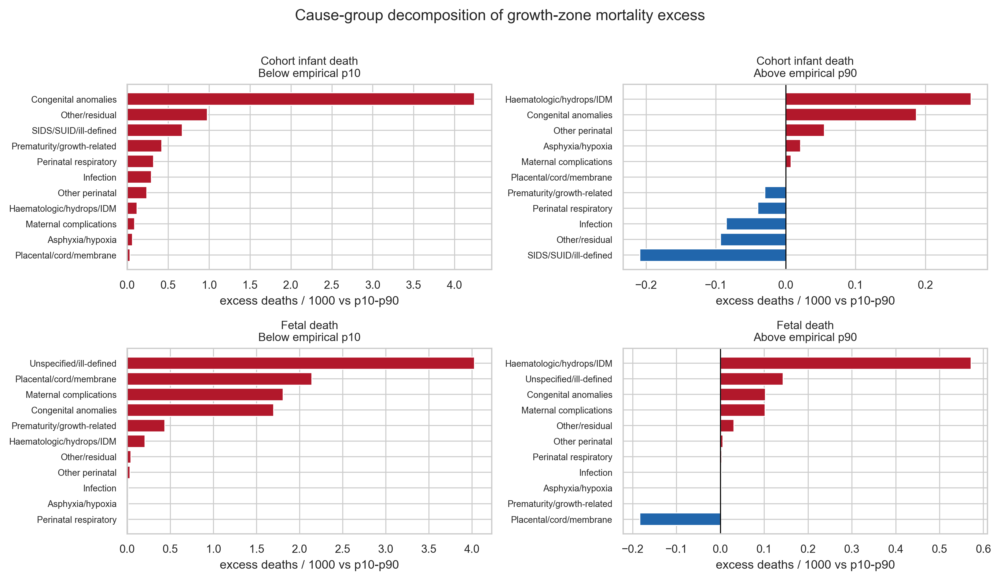
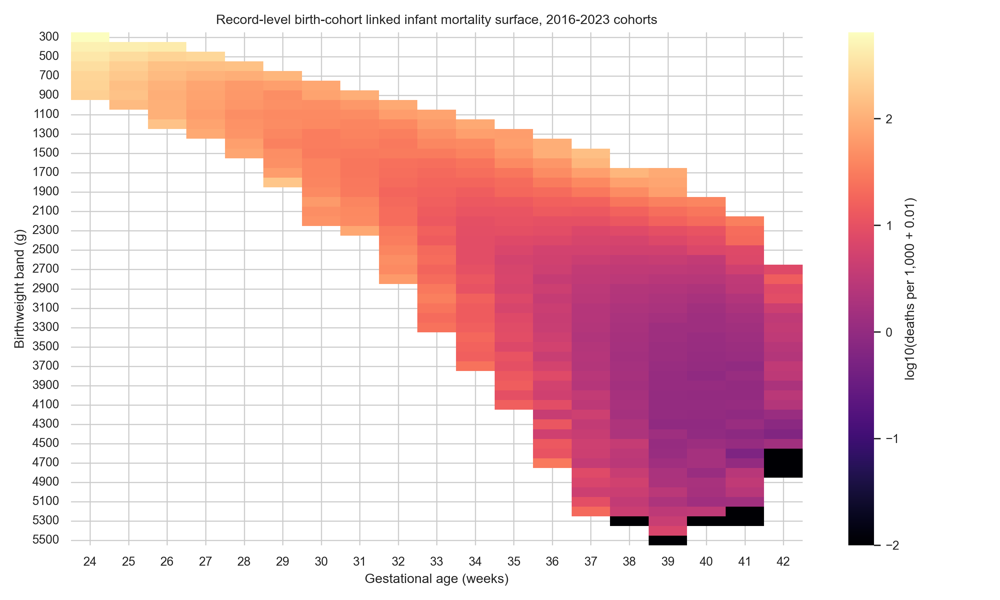
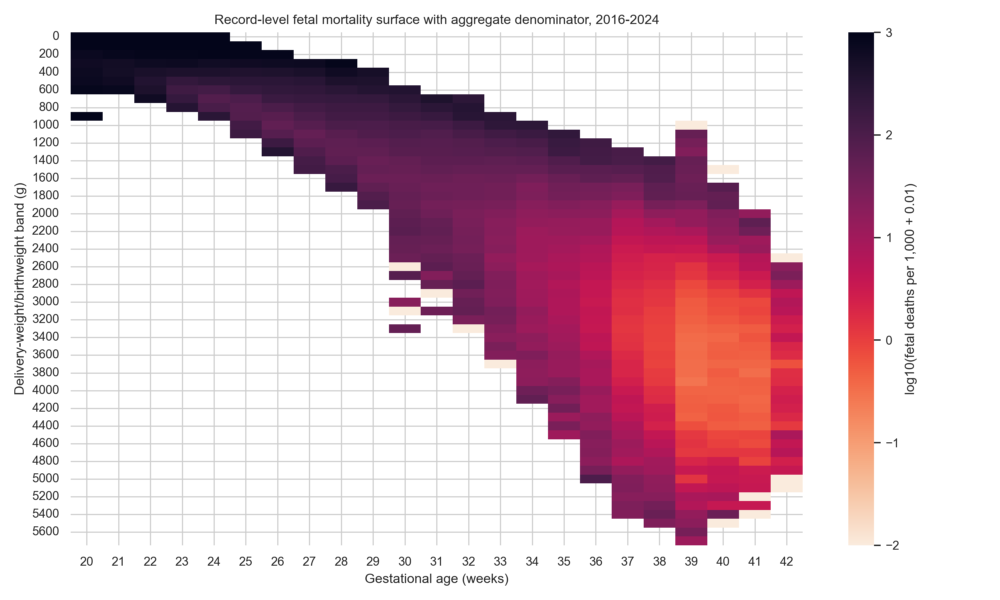
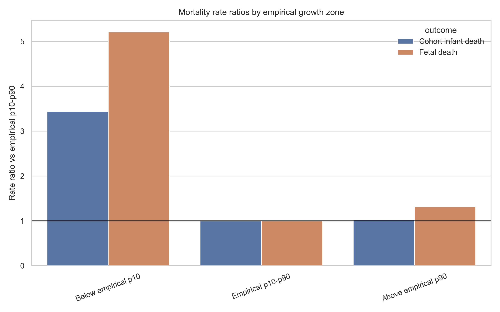

NCHS Fetal-Growth and Infant-Mortality Study
Paper: A Reproducible Public-Data Benchmark of Birthweight-for-Gestational-Age Deviations and Infant/Fetal Mortality Risk: A Cross-Sectional Ecological Analysis of United States Vital Statistics, 2016–2024
A 33.5-million-record independent study analyzing the Black–White infant-mortality gap. I wrote code that turns raw U.S. birth, infant-death and fetal-death files (2016–2024) into an open benchmark, then used it to measure how a baby's size for its week of pregnancy relates to stillbirth and to death in the first year of life, and where the gap between Black and White babies sits.
- My role
- Sole author · independent research project
- Status
- Under review at Scientific Reports
- Data
- 33,589,282 natality records parsed (NCHS public-use files, 2016–2024)
- Origin
- Expanded from my IB Math HL Internal Assessment
- Code & archive
- Open source (MIT) · Zenodo v1.1.0, Aug 23, 2026
Overview
Doctors often sort newborns by size for the week of pregnancy at delivery. A baby whose weight falls below the 10th percentile (p10) for its sex and week is usually called small for gestational age; above the 90th percentile (p90), large for gestational age. I wanted to measure, using only data that anyone can download and check, how strongly those groups track two different outcomes: fetal death (stillbirth) and infant death (death before the first birthday).
Working on my own, I wrote Python code that streams the raw fixed-width files published by the National Center for Health Statistics (NCHS), parses 33,589,282 natality (birth) records along with the linked infant-death and fetal-death files, and groups them into 19,166 model-ready cells: one for each combination of year, sex, completed week of pregnancy and 100-gram weight band. With that benchmark I asked four questions:
- Causes. Which causes of death drive the extra risk in small and large babies?
- The Black–White gap. How much of the gap comes from differences in growth, and how much from higher death rates among babies in the same growth zone?
- The pandemic. Did the link between growth and mortality change during COVID-19?
- Growth charts. Does it matter which growth standard defines "expected" size?
The project started as my IB Math HL Internal Assessment, and I expanded it into this independent study. The manuscript is currently under review at Scientific Reports.
My role. Sole author. The paper's contribution statement lists study conception, data collection, analysis preparation, coding, maintaining the audit history and writing the paper as my work (§3.8). The data are public and de-identified, so no IRB approval was needed.
How to read these results. Every estimate comes from grouped cells, not individual records. The findings describe patterns across the U.S. population; they cannot predict what will happen in one pregnancy, and they do not show what causes what.
Key results
Interactive dashboard
Six views of the published results. Pick a tab, use the buttons to switch outcome or growth zone, and hover over (or tab to) any point for exact values. Every chart has a data table and a source note; all numbers come from the paper and the result tables in the code repository.
Growth-zone risk
How much higher is the death rate for babies below p10 or above p90 than for babies in the middle (p10–p90)? A rate ratio of 1 means the same rate as the middle group. Infant deaths cover 2016–2023 birth cohorts; fetal deaths cover 2016–2024.
Mortality rate ratio by growth zone, infant vs fetal death (95% CI)
Below p10, risk is 3.445× (infant) and 5.213× (fetal). Above p90 the outcomes split: infant 1.025× but fetal 1.315×. At this scale the 95% intervals are narrower than the dots; hover or open the table for them.
Endpoint asymmetry: fetal rate ratio ÷ infant rate ratio (95% CI)
Above p90 the fetal ratio is 1.282 times the infant ratio (1.241–1.325, p < 0.001): the large-for-age signal is stronger for stillbirth than for infant death.
Across the pandemic
The paper treats COVID-19 as a natural experiment and recomputes the growth-zone rate ratios in three pooled periods: pre-pandemic (2016–2019), pandemic (2020–2021) and post-pandemic (2022–2023 for infant death, 2022–2024 for fetal death).
This is a three-period comparison, not a year-by-year trend. The study did not publish annual mortality rates, so none are shown here. The only year-by-year series of results is the model-validation AUC in the Validation tab.
Rate ratio vs the p10–p90 zone in three periods, below p10 (95% CI)
Change vs 2016–2019: ratio of rate ratios, below p10 (95% CI)
The Black–White gap
This view compares non-Hispanic Black and non-Hispanic White births at 24–42 weeks using a Kitagawa decomposition. It splits the gap between two death rates into two parts: the groups have a different mix of births across growth zones, and the groups have different death rates within the same zone.
How the Black–White infant-death gap splits (Kitagawa decomposition, weeks 24–42)
Infant deaths per 1,000 births within each growth zone, NH White vs NH Black
Share of births in each growth zone, NH White vs NH Black
Two different comparisons. The decomposition above covers weeks 24–42: infant rate ratio 1.99 (6.38 vs 3.21 per 1,000) and fetal 2.09 (7.30 vs 3.49). Across all gestational ages, the descriptive infant rates are 9.489 vs 4.013 per 1,000 (rate ratio 2.365) and the fetal rates 10.215 vs 4.525 (2.257). These are different populations, so the two sets of numbers should not be mixed (paper Table 4 and §4.8).
What this can and can't show. Race and ethnicity are treated as social stratification, not biology. These aggregate data show where the gap sits; they cannot identify what drives the higher death rates within the same growth zone, or whether any particular intervention would narrow it (paper pp.11, 17).
What drives the excess
For each growth zone, the paper splits the extra deaths (compared with the p10–p90 zone) into cause-of-death groups for weeks 24–42. Bars show excess deaths per 1,000: positive bars are cause groups with more deaths than in the reference zone, negative bars fewer. IDM means infant of a diabetic mother.
Excess deaths per 1,000 by cause group: infant death, below p10
Death-certificate codes, not confirmed causes. Cause groups come from the NCHS 130-cause infant recode and fetal initiating-cause codes, so they describe how deaths were coded rather than verified clinical causes. For below-p10 fetal deaths, "unspecified/ill-defined" is the largest group (38.7%). This is a descriptive breakdown, not an individual-level causal mechanism (paper pp.8–9, 18).
Growth standards
Should "small" be judged against the U.S. population's own curve, the WHO fetal growth charts, or the INTERGROWTH-21st standard? The paper tests each one by how well it separates deaths from survivors in held-out data, measured by AUC (0.5 = chance, 1 = perfect).
Held-out AUC by growth reference, infant vs fetal death
Infant: 0.781 for all three. Fetal: 0.886, 0.886 and 0.885. How far a baby is from expected size matters; which chart defines "expected" barely does.
Population vs customized (sex + maternal race) standard, held-out AUC
Adding maternal race did not improve discrimination: infant 0.762 vs 0.766 for the population standard; fetal 0.876 vs 0.876.
The customized comparison uses only non-Hispanic White and Black cells (a different validation set), so its population-standard AUC differs from the chart above. The paper evaluates customized charts because they are still in clinical use, not as an endorsement of race-based customization; the result is consistent with the move away from it (§4.4).
Validation
A model is only useful if it works on data it has not seen. The paper trains models on earlier years and tests them on later ones, and also repeats the test leaving out one year at a time. That leave-one-year-out AUC is the only year-by-year series of results in the study: it measures model accuracy, not mortality levels.
Leave-one-year-out validation AUC by held-out year: infant death
Held-out AUC by model: infant death
Try the risk calculator
I built a calculator on top of the benchmark so anyone can see how the model's estimates change with a baby's sex, week of pregnancy and birthweight. It is a static page served from GitHub Pages and runs in your browser, built from the released result tables.
A research tool, not medical advice. The calculator describes population-level patterns in U.S. vital statistics. It is not a clinical prediction tool and cannot give the risk for any individual pregnancy or baby. Questions about a real pregnancy belong with a doctor or midwife.
The app loads a charting library of about 4.8 MB, so it can take a few seconds to appear. If it does not load here, use “Open full screen”.
What you enter
- Sex: female or male.
- Completed weeks of pregnancy: 24 to 42.
- Birthweight: 300 to 6,000 g in 50 g steps. It starts at the median (p50) for the chosen sex and week.
- Optional descriptive factors: maternal BMI group, diabetes, hypertension, race/Hispanic origin and smoking (each starts at none).
- Calibration outcome: infant or fetal death, for the calibration plot.
What you get
- A growth-zone badge: below p10 (small for gestational age), p10–p90, or above p90 (large).
- The p10, p50 and p90 reference weights for that sex and week.
- Estimated infant mortality (birth-cohort) and fetal mortality (delivery-based) per 1,000.
- An interactive risk curve across birthweights from 300 to 6,000 g for both outcomes, marking your weight and the p10/p50/p90 points.
- A calibration plot by predicted-risk decile and a decision-curve table.
How the estimate is computed
For the chosen sex and week, the page looks up the expected birthweight from the sex- and week-specific log-cubic curve and turns the entered weight into a relative residual r. It then evaluates the paper's GA + log-residual grouped-binomial logistic model, fit separately for infant and fetal death:
r = (weight − expected) / expected
z = b0 + b1·GA + b2·GA² + b3·male
+ b4·r + b5·|r|
risk per 1,000 = 1000 / (1 + e^−z)GA is completed weeks of pregnancy. Because the model includes both r and |r|, estimated risk can rise on either side of the expected weight, and the published coefficients make it rise more steeply on the low side. The growth-zone badge compares the weight with the p10 and p90 for that sex and week. The optional factors only multiply the baseline estimate by descriptive, unadjusted rate ratios; they are not fitted adjustments.
Show the published model coefficients
| Term | Infant death (birth-cohort) | Fetal death (delivery-based) |
|---|---|---|
| Intercept (b0) | 7.8334 | −14.0472 |
| GA, completed weeks (b1) | −0.438158 | 0.997465 |
| GA² (b2) | 0.001692 | −0.021288 |
| Male (b3) | 0.154905 | −0.0261696 |
| r, relative residual (b4) | −1.99589 | −1.92189 |
| |r| (b5) | 2.9052 | 3.31912 |
Rounded to 6 significant digits. Full precision: risk_calculator_coefficients.csv; expected weights and p10/p50/p90 by sex and week: risk_calculator_expected_weight.csv.
Figures from the paper
Figure numbers follow the paper; Figure 2 (the live-birth density surface) is in the PDF below. Click or press Enter on any figure to zoom and pan.




How to read the heatmaps
Each square is one week of pregnancy (across) and one weight band (down). Color shows the death rate on a log scale, so each step of 1 on the color bar is about ten times the rate.
The two heatmaps use opposite color directions: in Figure 3 lighter means higher infant mortality; in Figure 4 darker means higher fetal mortality. Check each color bar.
Figure 4 is a delivery-based surface (fetal deaths divided by fetal deaths plus live births in the same cell), not the risk for ongoing pregnancies.
Methods
The study is a cross-sectional, ecological (aggregate-cell) analysis of U.S. vital statistics for 2016–2024, reported following the STROBE and RECORD guidelines for observational studies of routinely collected data. Every step runs from released code; no step is done by hand.
Build the data
Download
Stream the fixed-width public-use ZIP files from NCHS: natality, linked birth/infant-death and fetal-death files.
Parse
Read sex, plurality, obstetric gestational age and birthweight from fixed character positions; keep singletons with usable values (no imputation).
Aggregate cells
Group records by year × sex × completed week × 100 g band. Birth-cohort infant cells join each cohort's births to deaths filed that year and the next.
Expected weight
Fit a sex-specific log-cubic curve of mean birthweight by week, plus the BCA proxy equation (N* = W / 3,500 g) as a demonstration candidate.
Analyze and audit
Residuals & zones
Place each weight band below p10, p10–p90 or above p90 for its sex and week, and compute each cell's residual from expected weight.
Rate ratios & decomposition
Grouped-binomial logistic models, rate ratios with 95% CIs, delta-method tests, and cause-group and Kitagawa decompositions.
Temporal validation
Train on earlier years, test on later ones; leave one year out at a time; bootstrap AUC differences; 200-specification robustness check.
Audit
SHA-256 hashes, source manifests, count-flow tables, field maps and a script that re-checks the headline numbers; STROBE/RECORD reporting.
From raw files to model-ready cells: fetal-death analysis (counts)
Statistical details
- Death rates are modeled with grouped-binomial generalized linear models (logit link) in Python 3.13 with statsmodels 0.14.6, pandas 2.3.3 and numpy 2.4.4; expected-size curves use scipy 1.17.1.
- Rate-ratio 95% intervals use the normal approximation on the log rate ratio; endpoint and period contrasts use a delta-method ratio of rate ratios with a z-test.
- Temporal validation: infant models train on 2016–2020 and test on 2021–2023; fetal models train on 2016–2021 and test on 2022–2024. AUC differences use a cluster bootstrap of validation cells (2,000 replicates).
- The robustness check varies the gestational-age window, weight-band width (100–500 g), minimum cell size and fetal denominator definition across 200 specifications.
- The primary benchmark adjusts only for gestational age and sex; adding race/Hispanic-origin covariates changed the zone coefficients by less than 2% (sensitivity analysis, §4.6).
Reproducibility
I built the project so that someone else can check every number: the code, result tables, audit trail and archive are all public.
GitHub repository
The deterministic pipeline, sub-analysis scripts, LaTeX source of the paper and supplement, dashboard and calculator.
Permanent DOI
- Concept DOI
- 10.5281/zenodo.21894038 (always resolves to the latest release)
- Current version
- v1.1.0, published 2026-08-23 (version DOI 10.5281/zenodo.22065415)
- Release notes
- "This release archives the revision submitted to Scientific Reports"
- License
- MIT
Hashes and manifests
- A SHA-256 release manifest, so anyone can confirm they have the same files.
- A source-to-result map from each raw file to each table, figure and dashboard output.
- Count-flow tables and fixed-width field maps for every parsed file.
- A claim-verification script that re-checks the paper's headline counts, rate ratios and validation metrics against the generated tables.
Public sources
Large raw NCHS public-use ZIP files (natality, linked birth/infant-death and fetal-death) are not redistributed. The scripts download them from the documented source manifest, check each ZIP's integrity and regenerate every table. CDC WONDER exports and the WHO, INTERGROWTH-21st and NICHD growth standards serve as cross-checks and comparators.
Core commands
python3 scripts/download_public_data.py --include-large --jobs 4
python3 scripts/check_zip_integrity.py
python3 scripts/run_expanded_public_data_analysis.py
python3 scripts/verify_manuscript_claims.pyThe README lists the full sequence, including each sub-analysis. A pinned lockfile reproduces the Python 3.13 environment.
Download the result tables (CSV)
- growth_zone_rate_ratios.csvTable 6: rates and rate ratios by zone
- ratio_of_rate_ratios.csvFetal-vs-infant asymmetry tests
- cause_excess_decomposition.csvTable 3: cause-group decomposition
- disparity_kitagawa_summary.csvTable 4: Black–White decomposition
- disparity_kitagawa_by_zone.csvZone shares and rates by race
- covid_period_zone_rate_ratios.csvThree-period rate ratios
- covid_shift_tests.csvPandemic shift tests
- standards_adjudication.csvGrowth-standard AUCs
- temporal_validation.csvTable 8: held-out validation
- leave_one_year_out_validation.csvAUC by held-out year (supplement table)
- count_flow.csvTable 1: record count flow
- risk_calculator_coefficients.csvCalculator model coefficients
Copies of the repository's app_data tables; the leave-one-year-out table is transcribed verbatim from the supplement's LaTeX table.
Limitations
- Population-level, not individual. Associations measured across aggregate cells may not hold for individual pregnancies (the ecological fallacy), and no estimate adjusts for individual maternal factors such as age, parity, body-mass index or other conditions.
- Not causal. The results describe patterns. They do not show what causes the deaths or which interventions would help.
- Fetal denominator. Fetal death rates divide by deliveries (fetal deaths plus live births in the same cell), not by ongoing pregnancies, so they are not a fetuses-at-risk hazard.
- Coding and measurement. Gestational age from the obstetric estimate can be misclassified, a small share of infant deaths cannot be linked to a birth certificate, cause groups reflect death-certificate coding, and CDC small-cell suppression limits detail.
- The BCA proxy. The Binary Cellular Analysis framework is available only as preprints and has not been peer reviewed. The study uses its equation only as a demonstration of how the benchmark judges a candidate growth curve, not as evidence about cells.
- Next step. Adjusting for individual-level factors needs record-level modeling outside this aggregate design, which the paper names as next-stage work.
Read the paper
Manuscript dated August 23, 2026. The supplementary data file (compiled July 28, 2026) holds the source inventory, field map, record counts by file, validation tables and the STROBE/RECORD-style checklist.
Cite
The paper (APA)
The code and data archive (APA)
Glossary
- Gestational age
- Completed weeks of pregnancy at delivery, from the obstetric estimate on the birth or fetal-death certificate.
- p10 / p90
- The weights below which 10% and 90% of babies of the same sex and week fall. Below p10 is usually called small for gestational age; above p90, large for gestational age. Here the cut-offs come from the U.S. births themselves.
- Infant death (birth-cohort linked)
- A death before age one, linked back to the baby's birth certificate and counted with the year the baby was born.
- Fetal death (delivery-based)
- A stillbirth (here at 24–42 weeks). The rate divides fetal deaths by fetal deaths plus live births in the same cell.
- Rate ratio (RR)
- One group's death rate divided by a reference group's. An RR of 3.445 means 3.445 times the rate of the p10–p90 zone.
- 95% confidence interval (CI)
- The range of values compatible with the data. A narrow range means a precise estimate.
- Ratio of rate ratios
- One rate ratio divided by another, used to test whether two outcomes or periods differ. 1 means no difference.
- Kitagawa decomposition
- A method that splits a gap between two groups' death rates into a part from different mixes across categories and a part from different rates within the same category.
- Aggregate cell
- One combination of year, sex, week of pregnancy and 100 g weight band, holding counts of births and deaths. Working with cells is what makes the design ecological.
- Expected weight and residual
- The expected weight comes from a smooth log-cubic curve of average birthweight by week, fit separately by sex. The residual is how far a weight sits from it: r = (weight − expected) / expected.
- BCA proxy
- A compact growth equation from the Binary Cellular Analysis preprints (not peer reviewed), using N* = W / 3,500 g. Tested here only as a demonstration candidate.
- AUC
- How well a model ranks deaths above survivors: 0.5 is chance, 1.0 is perfect. "Weighted" because it is computed from cell counts.
- Temporal validation
- Fitting a model on some years and testing it on years it never saw, including leaving out one year at a time.
- STROBE / RECORD
- Reporting checklists for observational studies and for studies that use routinely collected health data.
- SHA-256 hash
- A fingerprint of a file. If a file changes, its hash changes, so others can confirm they have identical files.
- Concept DOI
- A permanent identifier that always resolves to the latest archived version of the project.